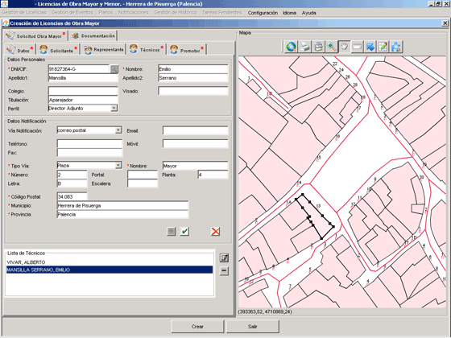
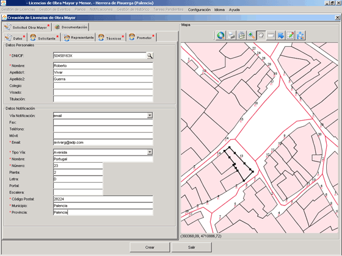

Con esta opción el usuario podrá introducir una nueva Licencia de Obra Mayor en el sistema. Cuando una solicitud de Licencia de Obra entra en el sistema, se crea un Expediente para dicha solicitud.
En primer lugar el usuario seleccionará el tipo de licencia que desea crear, en este caso Licencia de Obra Mayor:
Una vez seleccionada la opción, la aplicación muestra el formulario que el usuario debe rellenar para crear una nueva Licencia de Obra Mayor en el sistema.
El * que aparece en algunas pestañas, indica que éstas contienen datos que han de cumplimentarse obligatoriamente para dar de alta en el sistema una Licencia de Obra.

Corresponde a los datos propios a la Licencia de Obra. A su vez, se divide en varias pestañas para una entrada de datos más ordenada:
Los campos marcados con * han de ser cumplimentados obligatoriamente, o de lo contrario no se podrá crear la Licencia de Obra.
Los campos que se presentan en esta pestaña son:
Emplazamiento de la Licencia de Obra Mayor en el Mapa.
 - asigna a la Licencia de Obra las referencias catastrales posicionadas en el mapa.
- asigna a la Licencia de Obra las referencias catastrales posicionadas en el mapa. - posiciona en el mapa las referencias catastrales asignadas a la Licencia de Obra.
- posiciona en el mapa las referencias catastrales asignadas a la Licencia de Obra. .
.
Corresponde a los datos del solicitante de Licencia de Obra. Una Licencia de Obra Mayor tiene que tener obligatoriamente asignado un titular.
Los campos marcados con * han de ser cumplimentados obligatoriamente, o de lo contrario no se podrá crear la Licencia de Obra.
Los campos que se presentan en esta pestaña son:
 ,
aparecerá un diálogo de búsqueda de personas jurídico-físicas que ya son titulares,
representantes, técnicos o promotores de alguna Licencia del sistema. Pulsando en el botón de Aceptar
de la ventana de diálogo, se rellenarán automáticamente el resto de campos que hacen referencia a los
datos personales del solicitante.
,
aparecerá un diálogo de búsqueda de personas jurídico-físicas que ya son titulares,
representantes, técnicos o promotores de alguna Licencia del sistema. Pulsando en el botón de Aceptar
de la ventana de diálogo, se rellenarán automáticamente el resto de campos que hacen referencia a los
datos personales del solicitante.
Corresponde a los datos del representante del titular de la Licencia de Obra. Una Licencia de Obra, puede tener representante. No es obligatorio para la creación de Licencia de Obra.
Si una Licencia de Obra tiene representante, entonces los campos marcados con * han de ser cumplimentados obligatoriamente, o de lo contrario no se podrá crear la Licencia de Obra.
Los campos que se presentan en esta pestaña son:
,
aparecerá un diálogo de búsqueda de personas jurídico-físicas que ya son titulares,
representantes, técnicos o promotores de alguna Licencia del sistema. Pulsando en el botón de Aceptar
de la ventana de diálogo, se rellenarán automáticamente el resto de campos que hacen referencia a los
datos personales del representante.
Corresponde a los datos de los técnicos de la Licencia de Obra. Una Licencia de Obra Mayor tiene que tener obligatoriamente asignado al menos un técnico.
Los campos marcados con * han de ser cumplimentados obligatoriamente, o de lo contrario no se podrá crear la Licencia de Obra.
Los campos que se presentan en esta pestaña son:
,
aparecerá un diálogo de búsqueda de personas jurídico-físicas que ya son titulares,
representantes, técnicos o promotores de alguna Licencia del sistema. Pulsando en el botón de Aceptar
de la ventana de diálogo, se rellenarán automáticamente el resto de campos que hacen referencia a los
datos personales del técnico. . Se añadirá el técnico a la lista.
. Se añadirá el técnico a la lista. . El técnico seleccionado desaparecerá de la lista.
. El técnico seleccionado desaparecerá de la lista. , y se mostrarán los datos personales y de notificación del técnico.
, y se mostrarán los datos personales y de notificación del técnico. . Pone a blanco los campos referentes a los datos personales y de notificación.
. Pone a blanco los campos referentes a los datos personales y de notificación.
Corresponde a los datos del promotor de la Licencia de Obra. Una Licencia de Obra Mayor tiene que tener obligatoriamente asignado un promotor.
Los campos marcados con * han de ser cumplimentados obligatoriamente, o de lo contrario no se podrá crear la Licencia de Obra.
Los campos que se presentan en esta pestaña son:
,
aparecerá un diálogo de búsqueda de personas jurídico-físicas que ya son titulares,
representantes, técnicos o promotores de alguna Licencia del sistema. Pulsando en el botón de Aceptar
de la ventana de diálogo, se rellenarán automáticamente el resto de campos que hacen referencia a los
datos personales del promotor.
Corresponde a los distintos tipos de documentación que el solicitante de la Licencia de Obra debe entregar en la solicitud para evaluar la concesión o denegación de la licencia para realizar la obra.
Los campos que se presentan en esta pestaña son:
 Visualizar anexo. Sólo si el sistema operativo es Windows, se visualizará el contenido del anexo seleccionado. Añadir anexo. Pulsando el botón Añadir se abrirá una ventana de diálogo de selección de fichero,
para que el usuario pueda seleccionar en local el anexo que va a añadir a la solicitud. Eliminar anexo. Para eliminar un anexo de la tabla, primero se selecciona el anexo a eliminar,
y a continuación se pulsa sobre el botón Eliminar.
Visualizar anexo. Sólo si el sistema operativo es Windows, se visualizará el contenido del anexo seleccionado. Añadir anexo. Pulsando el botón Añadir se abrirá una ventana de diálogo de selección de fichero,
para que el usuario pueda seleccionar en local el anexo que va a añadir a la solicitud. Eliminar anexo. Para eliminar un anexo de la tabla, primero se selecciona el anexo a eliminar,
y a continuación se pulsa sobre el botón Eliminar.Sección que muestra el mapa del Municipio del que se están gestionando las Licencias de Obra. Se compone de una botonera que permite al usuario moverse por el mapa:
 Permite hacer un zoom del mapa. Para ello, basta con pulsar el botón,
colocarse sobre el mapa e ir pulsando el ratón hasta conseguir el zoom deseado. (*Nota: Si se desea se puede hacer un zoom
directo también con esta herramienta, manteniendo pulsado el botón izquierdo del ratón e
inmediatamente enmarcar la imagen deseada. Con el botón derecho se consigue el efecto contrario).
Permite hacer un zoom del mapa. Para ello, basta con pulsar el botón,
colocarse sobre el mapa e ir pulsando el ratón hasta conseguir el zoom deseado. (*Nota: Si se desea se puede hacer un zoom
directo también con esta herramienta, manteniendo pulsado el botón izquierdo del ratón e
inmediatamente enmarcar la imagen deseada. Con el botón derecho se consigue el efecto contrario). Permite seleccionar una parcela del mapa. Basta con pulsar el botón,
y pulsar sobre la parcela que se desea seleccionar.
Permite seleccionar una parcela del mapa. Basta con pulsar el botón,
y pulsar sobre la parcela que se desea seleccionar.Crea la Licencia de Obra Mayor insertada en el formulario por el usuario.
Cierra el formulario de Creación de Licencia de Obra Mayor. Si se han introducido datos y no se ha pulsado previamente el botón de Aceptar, la solicitud no se graba en el sistema.